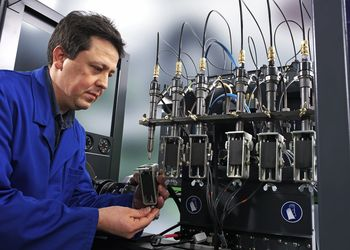
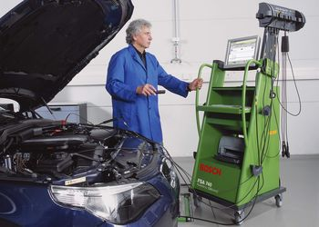
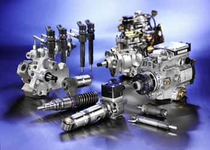

1. Diesel adagolók bevizsgálása, javítása
2. Diesel diagnosztikai vizsgálat
- Kompresszió és nyomásveszteség mérés a motor állapotának meghatározására.
- Dinamikus és statikus alapelőtöltés mérés, beállítás műszeresen.
- Turbófeltöltő rendszer vizsgálata, turbónyomás mérés.
- Kipufogógáz visszavezető (EGR) rendszer vizsgálata.
- Füstölés ellenőrzése, esetenként azonnali gyors hibakereséssel, beállítással.
- Elektronikus szabályozású személy és kisteher gépjárművek vezérlőegységének hibakód kiolvasása, menetközbeni vizsgálata.
3. Diesel porlasztók bevizsgálása, javítása
- Egyrugós
- hagyományos típusú befecskendezők javítása típustól függetlenül
- Kétrugós
- Bosch, Denso, Delphi típusú befecskendezők mindkét nyitónyomásának bemérése, beállitása DETEQ típusú berendezéssel
- Common Rail
- Bosch, Denso, Delphi, Simens tipusú magasnyomásu porlasztók bevizsgálása HARTRIDGE tipusú berendezéssel


A javítások előzetes feltételei
- A javításokat minden esetben, előzetesen telefonon történő egyeztetéssel, bejelentkezés alapján végezzük el. Ebben az esetben várakozás nélkül azonnal fogadjuk ügyfeleinket.
- Nagyobb javitások esetén, csak a teljes bevizsgálás, szétszerelés, hibafelvételezés után tudunk pontos javitási árat adni.
